auser Asti
GESTIONE OPERATIVA
Presentazione dell’applicazione desktop
Frecce ← → · pulsanti Avanti/Indietro · tasto F per schermo intero
A cosa serve
Un’unica applicazione per gestire i servizi di trasporto AUSER: dalla prenotazione all’incasso.
- Organizzare i servizi del giorno e quelli futuri
- Assegnare operatori e mezzi
- Consultare calendari, elenchi e report
- Gestire soci, operatori, mezzi e tratte fuori Asti
1. Accesso sicuro
All’avvio l’app chiede email e password.
- Ogni utente ha i propri permessi
- Si può cambiare utente dalla home
- Non serve configurare nulla sul PC
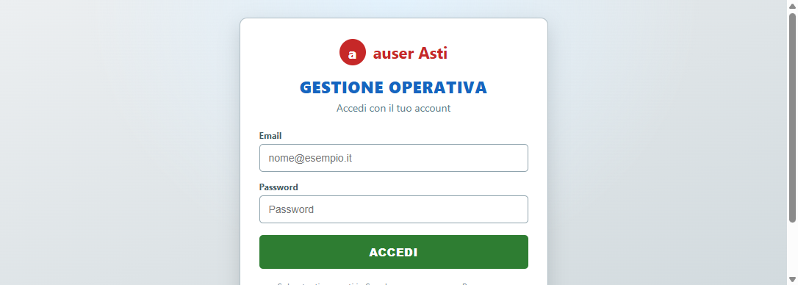
2. La home
Dopo il login vedi subito le attività della giornata.
- Servizi del giorno
- Prossimi servizi
- Servizi inseriti oggi
- Tessere da fare
- Menu a destra per tutte le funzioni
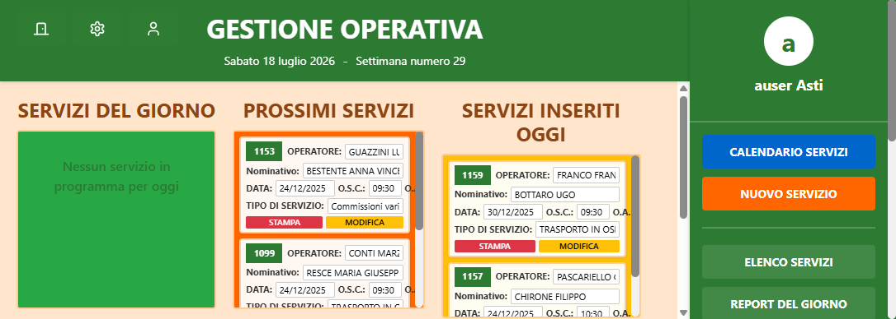
3. Nuovo servizio
Crei un trasporto in pochi passaggi:
- Cerchi il socio trasportato
- Compili prelievo e destinazione
- Scegli operatore e mezzo
- Imposti pagamento e salvi
Se il mezzo è già usato lo stesso giorno, l’app te lo segnala.
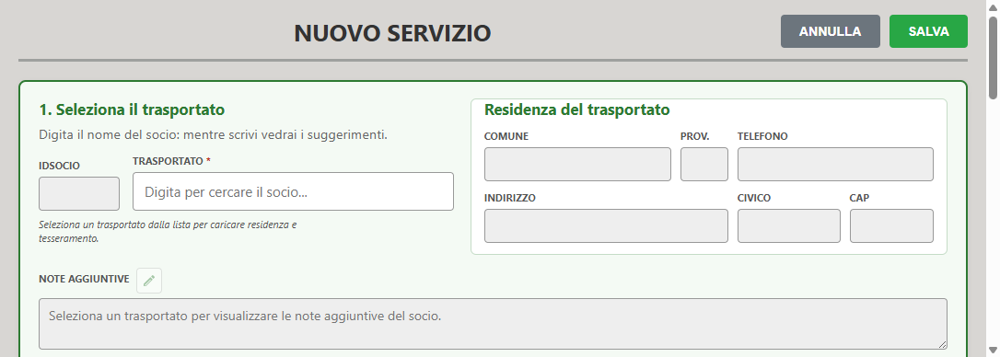
4. Calendario servizi
Vedi i servizi sul calendario:
- Vista mese, settimana o giorno
- Click sul servizio per i dettagli
- Utile per pianificare la settimana
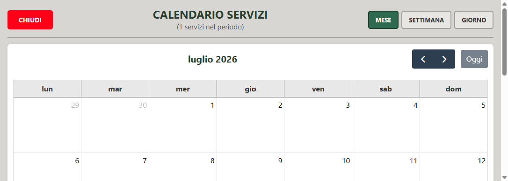
5. Elenco e ricerca
Trovi i servizi già registrati:
- Filtri per anno e stato
- Ricerca per socio, date, operatore…
- Azioni: modifica, completa, stampa
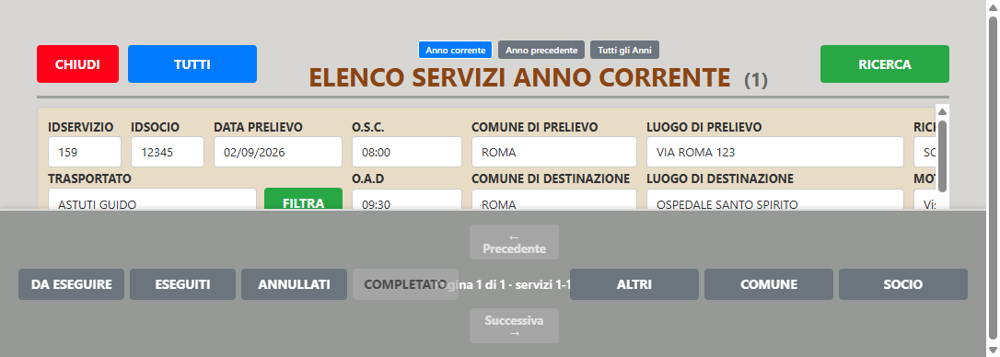
6. Elenco soci
Gestisci i soci dell’associazione:
- Ricerca e filtri (anche tessere scadute)
- Nuovo socio
- Apri anagrafica o servizi del socio
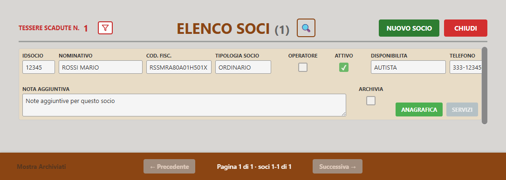
7. Anagrafica socio
Scheda completa del socio:
- Dati anagrafici e residenza
- Ruoli (operatore, autista…)
- Tesseramenti
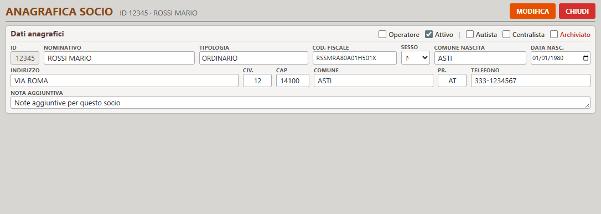
8. Elenco operatori
Chi guida i servizi:
- Anagrafica operatore
- Servizi assegnati
- Chilometraggio
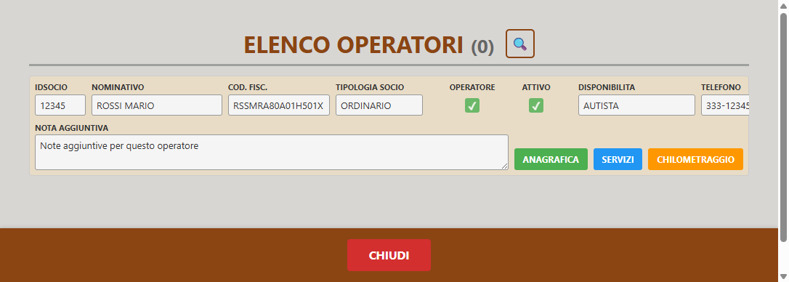
9. Elenco mezzi
I veicoli dell’associazione:
- Marca, modello, targa
- Scadenze ZTL, assicurazione, bollo
- Avvisi se una scadenza è passata
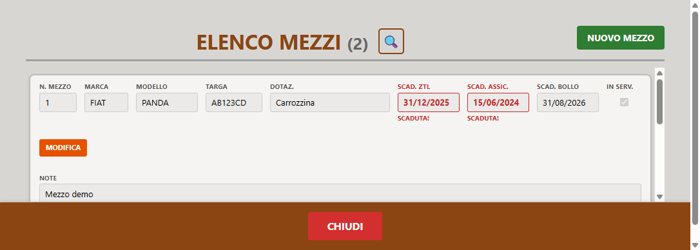
10. Tratte fuori Asti
Costi per destinazioni lontane:
- Km, tariffa e pedaggio
- Totale calcolato automaticamente
- Si collega al nuovo servizio
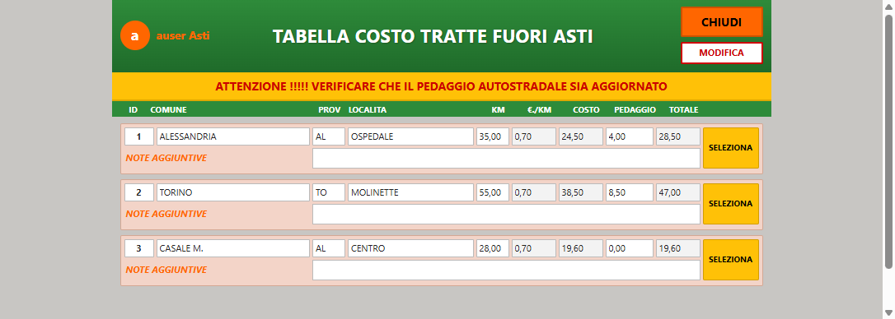
11. Report del giorno
Elenco stampabile dei servizi di una data.
- Cambia giorno con le frecce
- Pulsante STAMPA
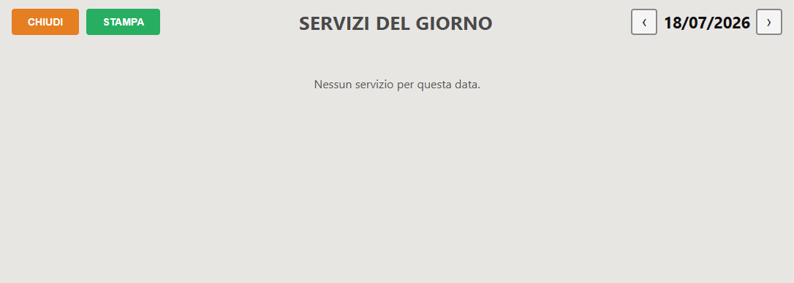
12. Report settimanale
Panoramica della settimana:
- Settimana precedente / corrente / successiva
- Vista per giorni
- Stampa del report
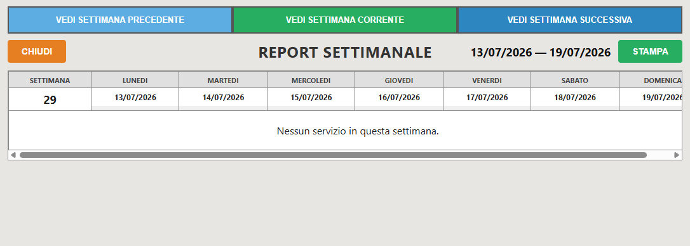
13. Incassi giornalieri
Scegli la data e visualizzi gli incassi.
- Selezione data
- Poi apri il riepilogo
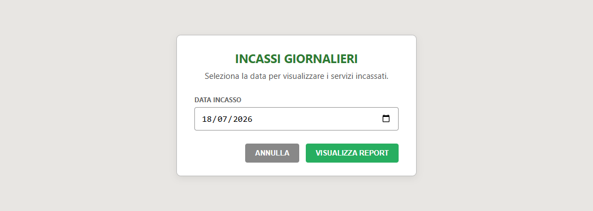
14. Riepilogo incassi
Servizi incassati in una giornata:
- Elenco dettagliato
- Totale della giornata
- Stampa
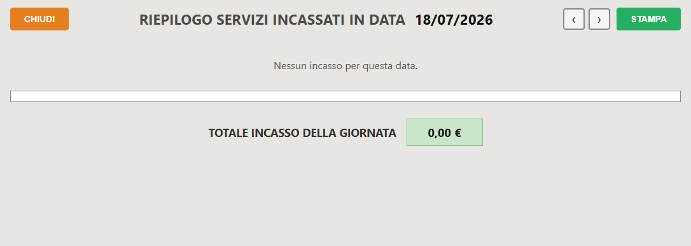
15. Chilometri
Riepilogo km percorsi per operatore:
- Si apre da Elenco operatori
- Filtro per mese e anno
- Stampa
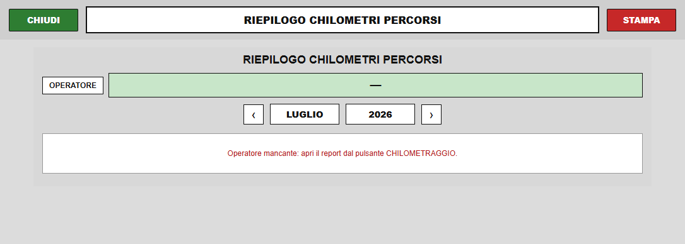
16. Riepilogo pagamenti
Per gli amministratori:
- Filtri per anno e stato
- Totali eseguiti / incassati / da incassare
- Conteggi servizi gratis
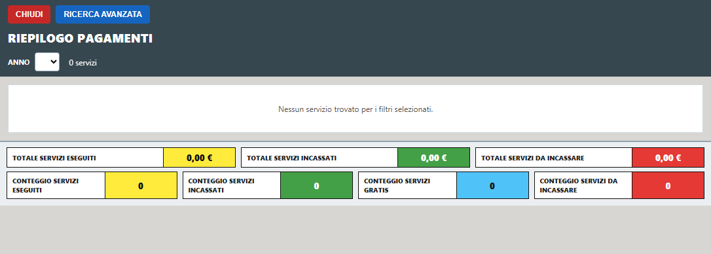
17. Impostazioni
Valori di configurazione (admin):
- Costo al km
- Tariffe
- Altri parametri dell’app
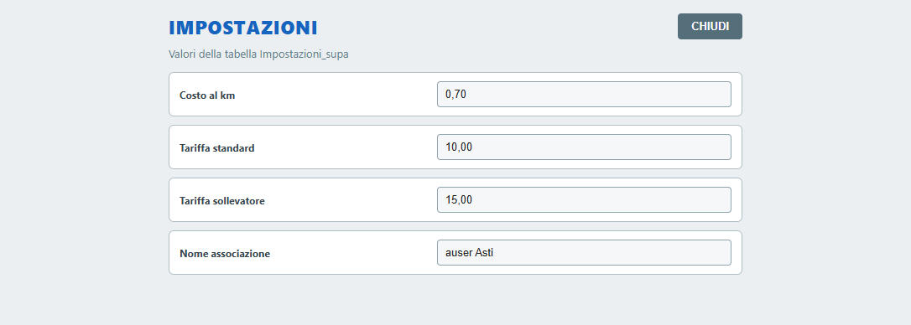
18. Gestione utenti
Chi può usare l’app (admin):
- Crea nuovi accessi
- Permessi Admin / Programma / Calendario
- Modifica password
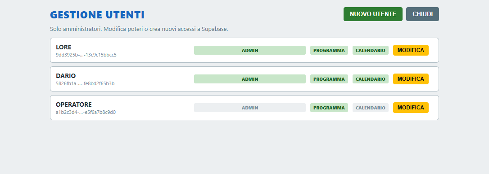
Come iniziare
- Installa l’applicazione sul PC
- Apri AUSER Gestione Operativa
- Accedi con email e password
- Lavora dalla home e dal menu a destra
Per cambiare persona: usa CAMBIA UTENTE nella sidebar.
auser Asti
Grazie
Domande?